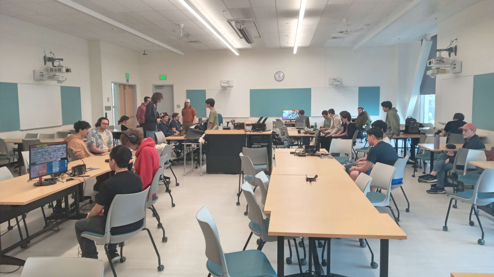
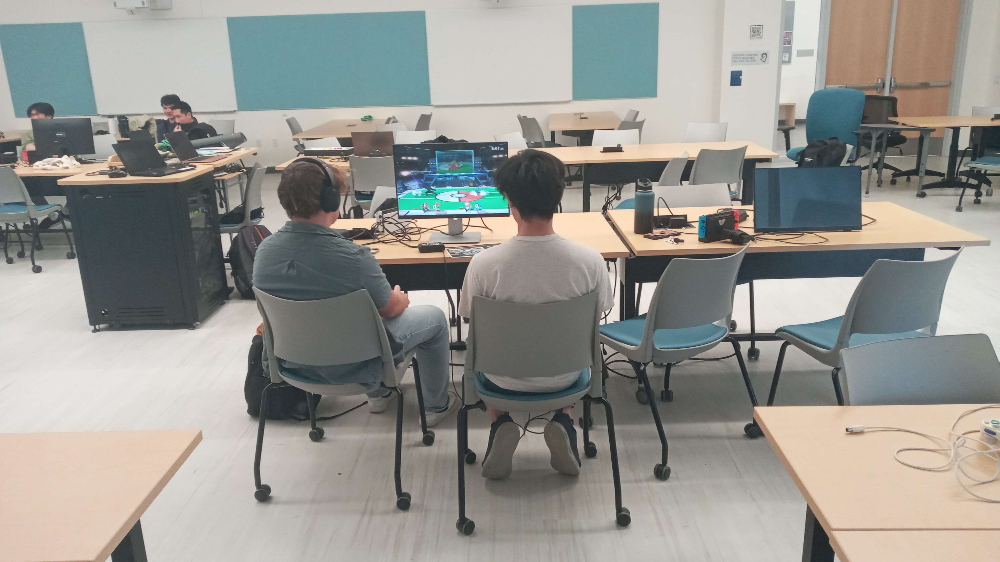
Dairy Free #11
Date: 3/1/2025 | Type: Local | Location: UC Davis, CA
Dairy Free is the name of the free tournaments hosted by the Smash Ultimate club at UC Davis. Its 11th installment happened in the usual room, TLC 1215
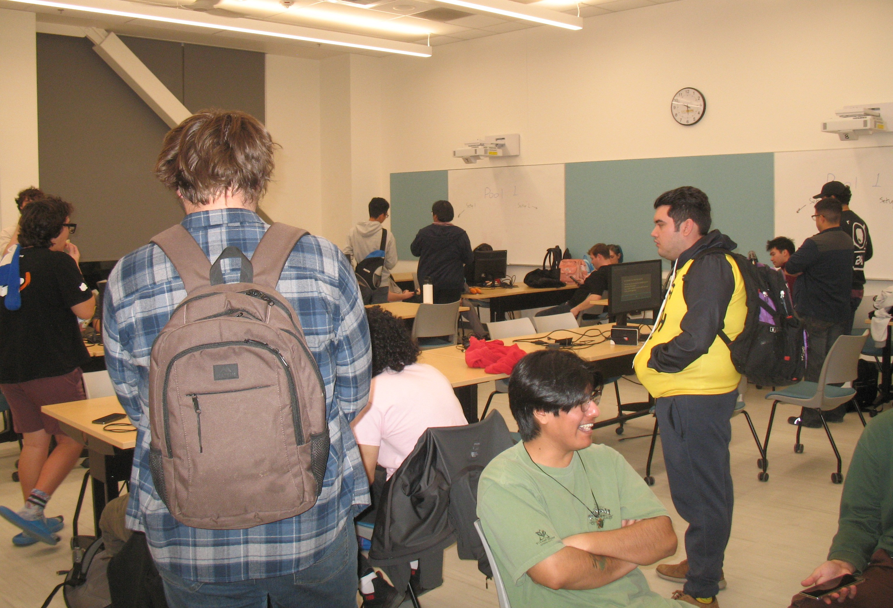
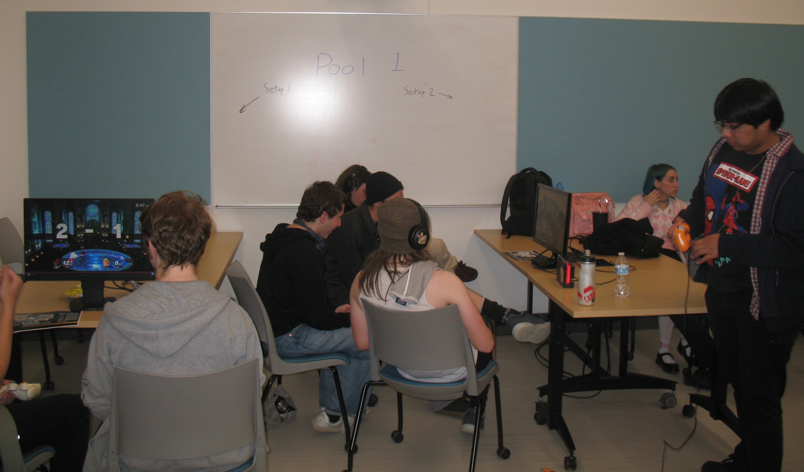
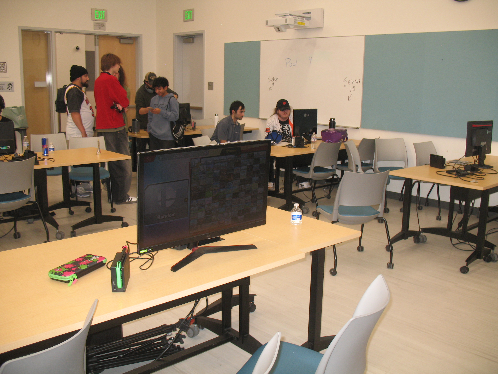
Cattlyst
Date: 1/18/2025 | Type: Regional | Location: UC Davis, CA
The first regional hosted at UC Davis! It featured brackets for Ultimate, Melee, and Rivals of Aether 2 (another platform fighter).
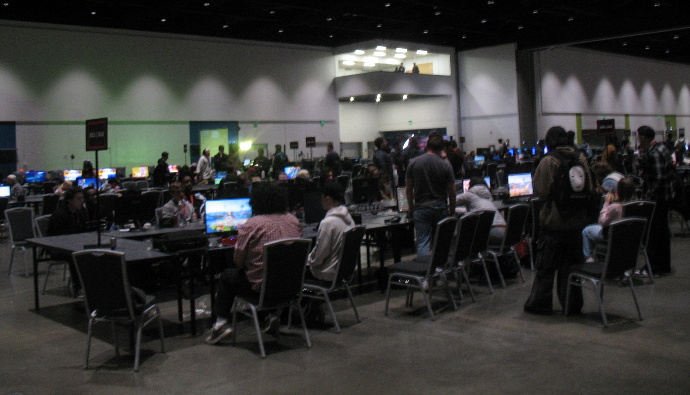
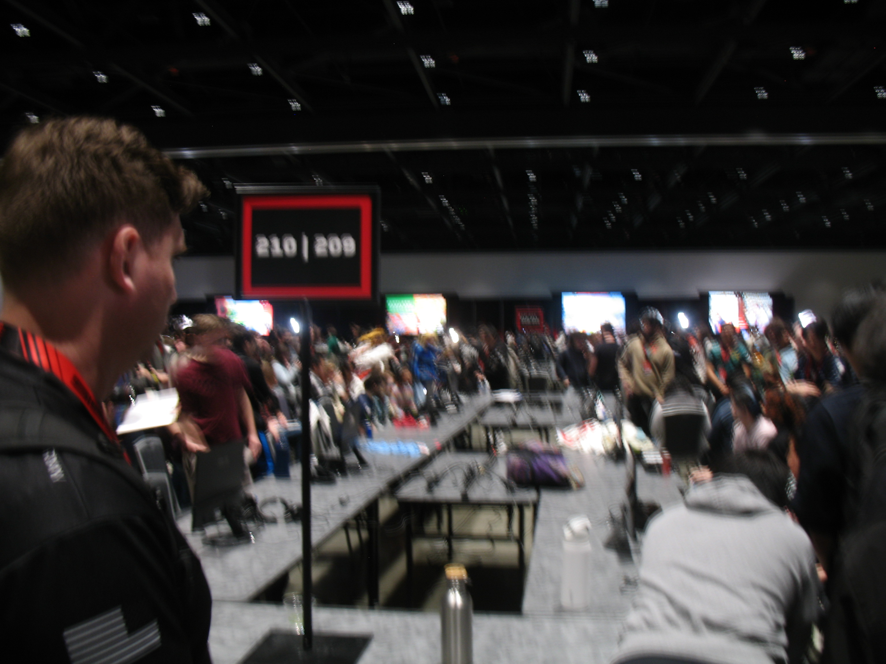
Genesis X2
Dates: 2/14/2025 - 2/16/2025 | Type: Supermajor | Location: San Jose, CA
A yearly giant tournament, its main two brackets are for Smash Ultimate and Melee, but they feature many other fighting game (and some arcade game) brackets as well.
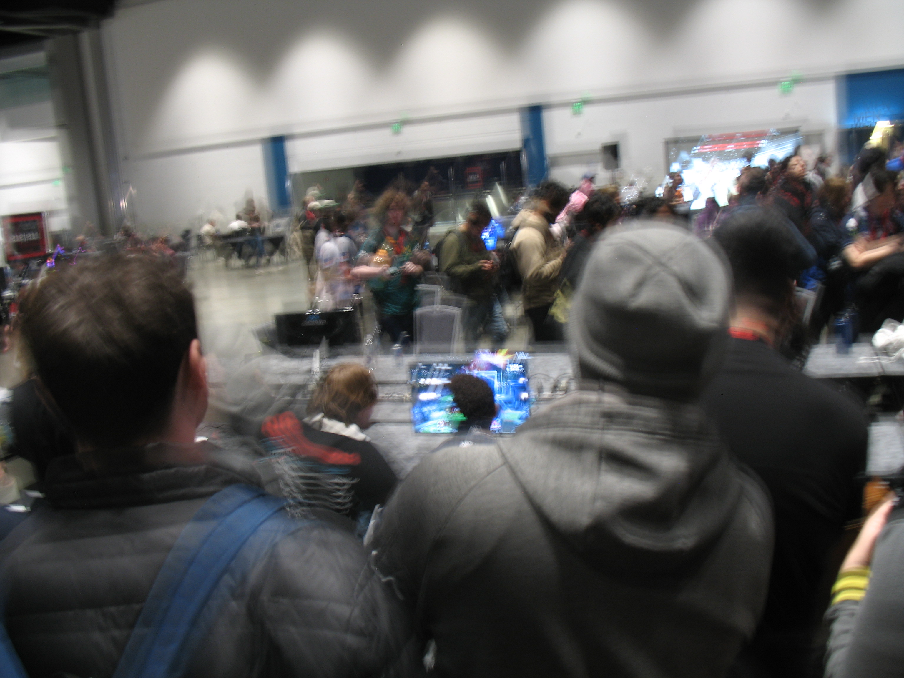
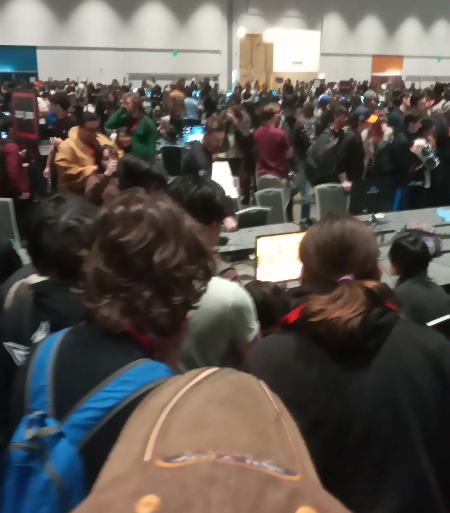
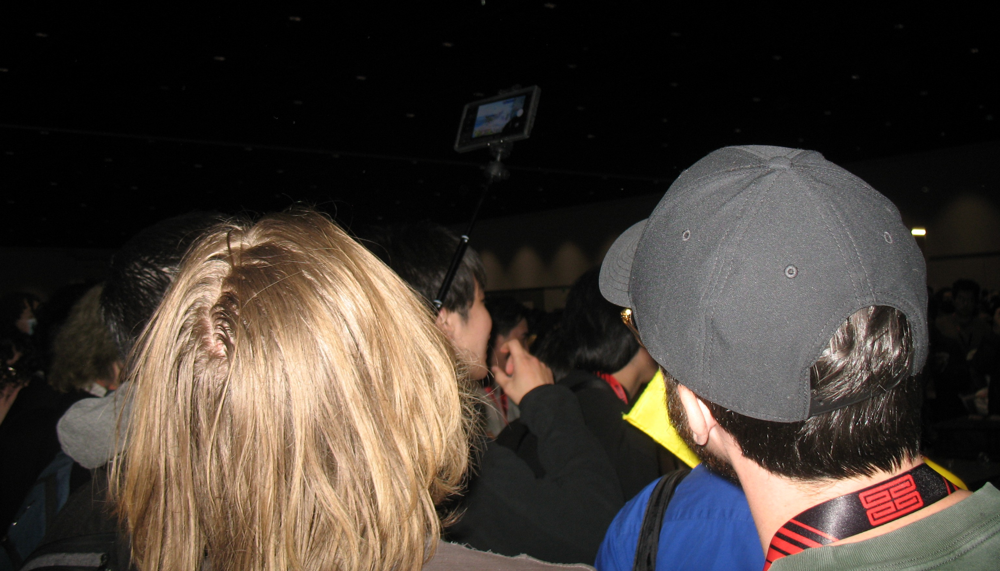
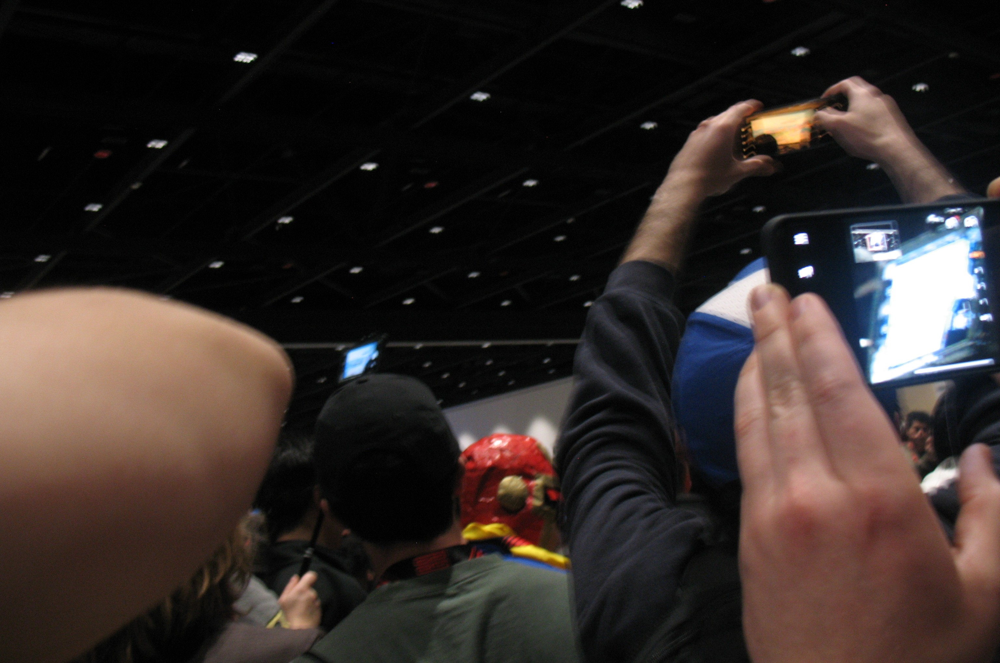